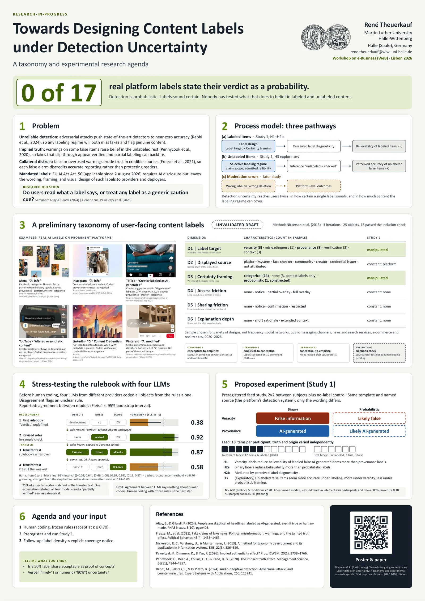

Research · Poster & paper
Towards Designing Content Labels under Detection Uncertainty
A Taxonomy and Experimental Research Agenda
Last updated 13 November 2026 · version history

Abstract
Platforms and regulators increasingly use labels to govern fake and AI-generated content. The EU AI Act requires provenance disclosure, and veracity warnings remain the main moderation tool. Because detection is unreliable, most problematic content stays unlabeled. Labels can then backfire, as users may take unlabeled misinformation as checked (implied truth effect). How this depends on label design is unknown. Studies disagree on whether users process what a label says or treat any label as a generic caution cue. We develop a preliminary taxonomy of user-facing content labels and select its two least understood dimensions, label target (veracity vs. provenance) and certainty framing (binary vs. probabilistic). We propose a preregistered feed experiment that isolates both, with a stimulus pool in which truth and origin vary independently. The agenda offers design guidance for transparency labels that regulation now requires. Research has not yet tested how their certainty framing affects belief and spillover.
Tell me what you think
Two design questions are still open:
- Is a 50% label share acceptable as proof of concept?
- Verbal (“likely”) or numeric (“80%”) uncertainty?
Comments on these or anything else are very welcome: info@theuerkauf.me.
How to cite
Theuerkauf, R. (forthcoming). Towards designing content labels under detection uncertainty: A taxonomy and experimental research agenda. Research-in-progress paper, Twenty-fifth Workshop on e-Business (WeB 2026), Lisbon, Portugal.
Version history
- 13 Nov 2026 Poster (version 8) and revised research-in-progress paper online.